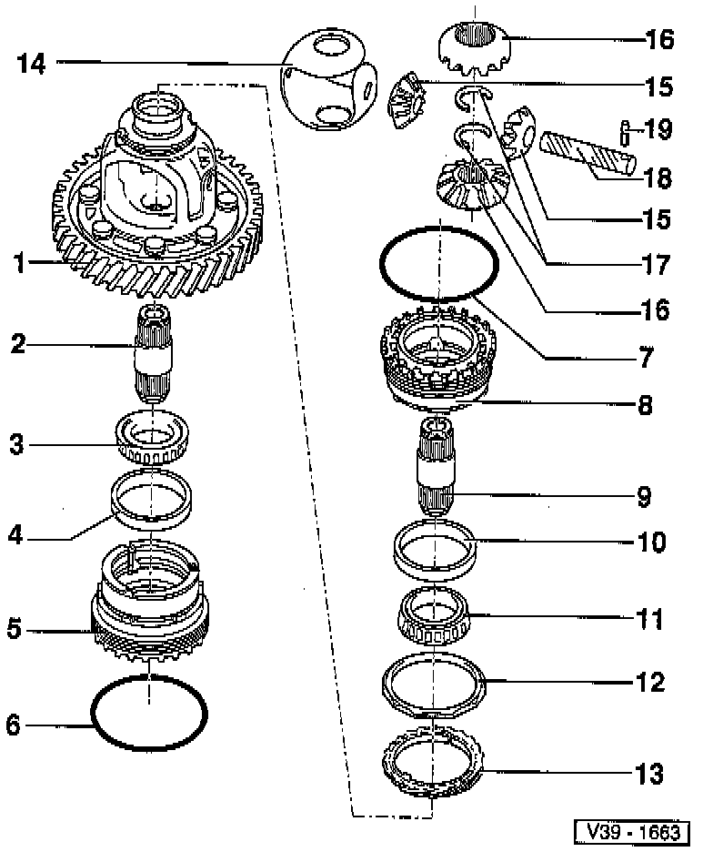
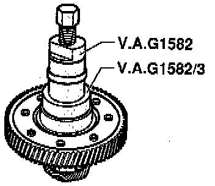
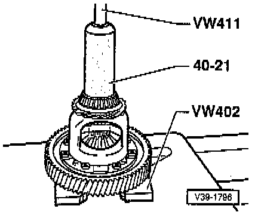

Disassemble/Assemble

COMPONENT NOTES AND INFORMATION
NOTE:
^ Heat tapered roller bearing inner race to 100°C before pressing on.
^ Heat adjusting ring for tapered roller bearing to 100°C before pressing in tapered roller bearing outer race.
1 Differential housing with riveted gear for final drive
- Final drive gear is riveted onto differential housing and then machined
- If the differential or final drive gear is damaged, replace the differential housing along with the riveted final drive gear
- Number of teeth on final drive gear. Application and ID
2 Output shaft/drive flange
- Refer to Removing/Installing.
3 Tapered roller bearing inner race
- Pulling off, refer to Fig. 1, below.
- Pressing on, refer to Fig. 2, below.
4 Tapered roller bearing outer race
- Remove and install only when adjusting ring heated
- Drive out with a drift
- Pressing in, refer to Fig. 4, below.
5 Bearing body for tapered roller bearing
- Refer to Removing/Installing
6 O-ring
- Always replace
7 O-ring
- Always replace
8 Adjusting ring for tapered roller bearing
- Refer to Removing/Installing
9 Output shaft/drive flange
- Removing and installing Removing and installing differential, Page 39-23
10 Tapered roller bearing outer race
- Remove and install only when adjusting ring heated
- Drive out with a drift
- Pressing in, refer to Fig. 4, below.
11 Tapered roller bearing inner race
- Pulling off, refer to Fig. 1, below.
- Pressing on, refer to Fig. 2, below.
12 Speedometer drive bushing
- Drive off together with speedometer drive gear -item 13-
- Drive on with drift
13 Speedometer drive gear
- Drive out with a drift
- Install together with drive bushing -item 12-
14 One-piece thrust washer
- Place into differential housing before installing bevel gears
15 Small bevel gears
- Installing, refer to Fig. 3, below.
16 Large bevel gears
- Installing, refer to Fig. 3, below.
17 Circlip
CAUTION: Do not remove circlip until after removing drive flange as compression spring is pre-tensioned.
18 Shaft for bevel gears
- Drive out with a drift
- When driving in, do not damage one-piece thrust washer
19 Spring pin
- For securing shaft for bevel gears
- Removing and installing spring pin with circumferential groove, refer to Fig. 5, below.
PROCEDURES

Fig. 1 Tapered roller bearing inner race, pulling off
- Place press piece 30-555 on differential housing.

Fig. 2 Tapered roller bearing inner race, pressing on

Fig. 3 Differential bevel gears, installing
- Install one-piece thrust washer with gear oil.
- Install small bevel gears, drive in shaft and secure with spring pinch
- Install large bevel gears offset 180° and swivel in (in direction of arrow).

Fig. 4 Tapered roller bearing outer race, pressing in
- With adjusting ring or bearing body heated, install outer race and press in up to stop.

Fig. 5 Spring pin with circumferential groove, removing and installing
- Length of spring pin 28.5 mm (1.122 inch)
- Removing
Pull out spring pin with side cutters.
- Installing
Drive in spring pin up to stop.